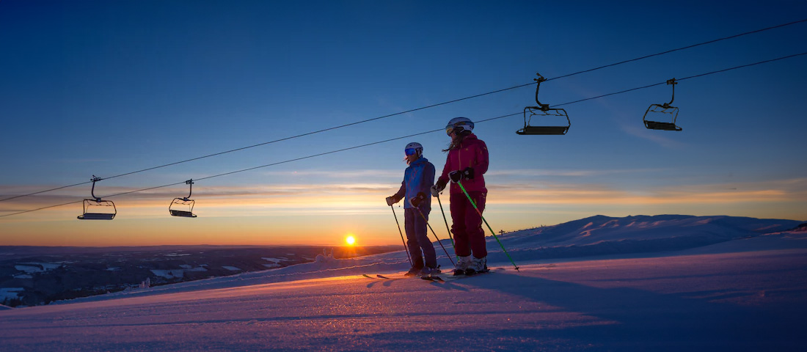
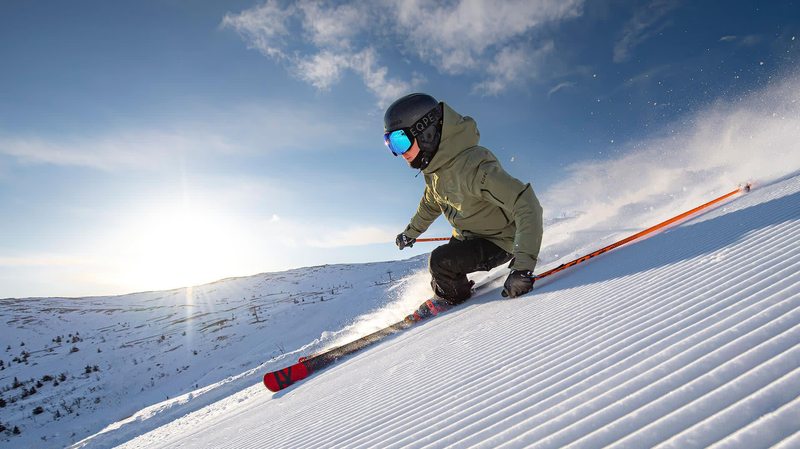
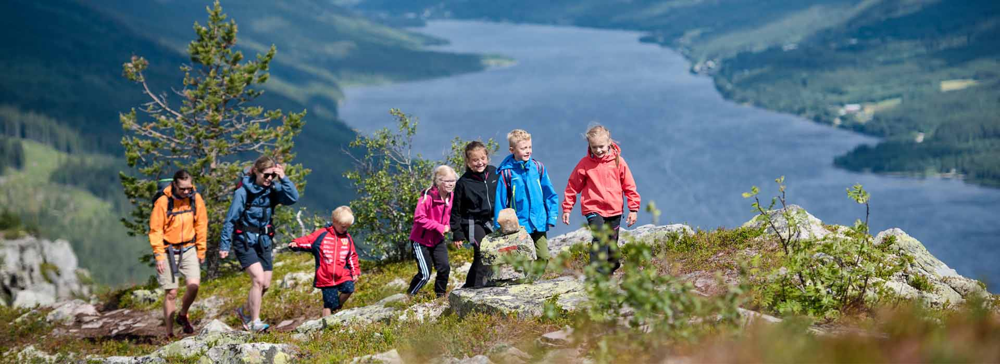

Trysil, Norway
Nestled in the heart of Norway, Trysil captivates with its untouched wilderness and outdoor wonders.This nature lover's haven boasts towering pine forests and crystal-clear lakes, setting the stage for a myriad of activities. Embrace winter with world-class skiing on powdery slopes or explore lush hiking trails in the warmer months. The iconic Trysil Bike Arena offers exhilarating mountain biking adventures, while the Trysil River promises thrilling kayaking experiences. Visit the charming Trysil Village for a taste of local culture and cuisine. Immerse yourself in nature's embrace and create unforgettable memories in Trysil.

Popular things to do:
1. Go skiing!
Embark on a thrilling skiing escapade across Trysil's renowned slopes. With a range of difficulty levels, from gentle hills for beginners to challenging runs for seasoned skiers, the resort ensures an exhilarating experience for all. Enjoy the crisp mountain air as you carve through pristine snowscapes, surrounded by breathtaking Nordic scenery.

2. Hike in the summer!
Challenge yourself with a hike to Trysilfjellet Summit, the highest point in Trysil. The trail offers a rewarding journey through dense forests and alpine landscapes, culminating in panoramic views of the surrounding valleys and peaks. Whether you're a seasoned hiker or a casual adventurer, this trek provides a memorable connection to Trysil's natural beauty.
